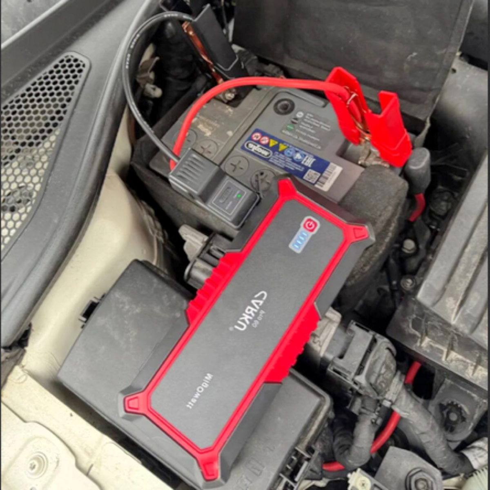

Прикурить авто запустить двигатель в Казани от 350р
Ваш автомобиль неожиданно перестал заводиться из-за разряженного аккумулятора? Не беспокойтесь, я быстро и без лишних сложностей заведу его в любом месте и любое время. Применяю только профессиональные пускозарядные устройства, чтобы обеспечить безопасность и надежность.
Выполняю свою работу качественно и добросовестно, не навязываю лишние услуги и скрытые доплаты. Всегда готов помочь, независимо от времени суток, включая выходные.
Стоимость моего выезда рассчитывается индивидуально и всегда остается прозрачной и честной. На цену влияют такие факторы, как ваше местоположение, объем двигателя, тип топлива и марка вашего автомобиля. В черте города минимальная стоимость вызова составляет от 350 рублей.
Отзывы об услуге: 5
Наташа
Отличный специалист, оперативно прибыл, подробно объяснил и успешно запустил.
Марина
Хорошо, быстро прикурил авто.
Адель
Спасибо, машина долго стояла, не удавалось прикурить от двух других автомобилей. Я вызвал эту помощь, и они прикурили без проблем, что удивительно.
Анна
Цена супер.
Альберт
Регулярно обращаюсь запустить генератор на стройплощадке, он всегда запускает без проблем. Это лучшее предложение по цене в Казани.
Ответы на вопросы:
1. Вопрос: Почему аккумулятор в автомобиле разряжается?
Ответ:
Причины разрядки автомобильного аккумулятора могут быть различными, среди которых выделяются следующие:
1. Генератор не заряжает аккумулятор должным образом.
2. Утечки тока вызывают постепенное снижение заряда.
3. Со временем ёмкость аккумулятора уменьшается.
4. Из-за частых коротких поездок аккумулятор не успевает полностью зарядиться от
генератора.
5. Частые запуски двигателя при отсутствии движения приводят к ускоренной
разрядке аккумулятора.
6. Когда двигатель автомобиля выключен, использование электрических устройств
разряжает аккумулятор.
7. Низкие температуры увеличивают вязкость электролита, снижая его
проводимость.
8. Ошибочный подбор аккумулятора по ёмкости, стартовому току или типу может
привести к его быстрой разрядке.
2. Вопрос: Допустимо ли использовать аккумулятор, который почти полностью разряжен?
Ответ:
Использование аккумулятора недопустимо, поскольку пластины подвергаются необратимому сульфатированию. На их поверхности формируются кристаллы сернокислого свинца, создающие плотный изолирующий слой. Этот слой препятствует нормальному взаимодействию пластин с электролитом, что, в свою очередь, приводит к уменьшению ёмкости аккумулятора. Если вам пришлось прикурить аккумулятор, это указывает на его разрядку. После этого обязательно зарядите аккумулятор, чтобы восстановить его рабочие параметры и продлить срок службы.
3. Вопрос: Почему мотор автомобиля не заводится при попытке завести его от другого автомобиля с использованием пусковых кабелей?
Ответ:
Завести двигатель с помощью пусковых проводов от другого автомобиля не получится,
если провода недостаточно толстые или имеют низкий ампераж, не позволяющий
передать нужный ток для запуска. Также проблема может возникнуть из-за старости
или повреждений проводов.
Применять провода для запуска двигателя рискованно, так как это может привести к
поломке вашего автомобиля.
4. Вопрос: Следует ли и в течение какого времени использовать автомобиль после подзарядки аккумулятора?
Ответ:
В течение 30-60 минут желательно использовать автомобиль, при этом важно, чтобы двигатель не работал на холостых оборотах, а функционировал в движении. Это позволит генератору эффективно подзарядить аккумулятор. Но для полной зарядки аккумулятора и восстановления его рабочих параметров рекомендуется подключить его к зарядному устройству.